From CoT to Agents: A Comprehensive Survey from Shanghai Jiao Tong University
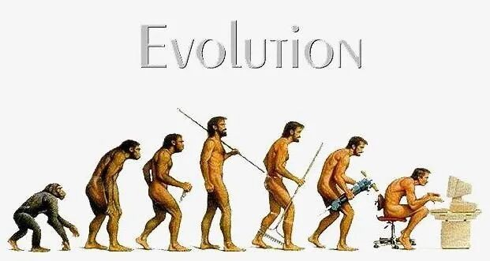
Just a couple of days ago, we talked about the recently booming concept of AI Agents in Some Thoughts on AI Agents. Given the limits of our own understanding, that article only offered a quick overview of how the concept of AI Agents has evolved and introduced a few representative technologies. It was neither deep nor detailed—more of a first look than a systematic treatment.
Now the specialists have arrived. Professor Zhuosheng Zhang of Shanghai Jiao Tong University and his collaborators have released a detailed survey tracing the path from Chain-of-Thought (CoT) reasoning to large-language-model agents. The paper discusses the basic concepts and mechanisms of CoT, the paradigm shifts behind it, and many frontier topics extending from CoT all the way to language agents. Following the structure of this survey, let us revisit AI Agents in a more systematic way.
Paper:
Igniting Language Intelligence: The Hitchhiker’s Guide From
Chain-of-Thought Reasoning to Language Agents
Paper:
https://arxiv.org/pdf/2311.11797.pdf
Project:
https://github.com/Zoeyyao27/CoT-Igniting-Agent
Instead of introducing AI Agents in a flat, encyclopedic way, this time we will use the paper to organize the discussion around seven questions about CoT and AI Agents:
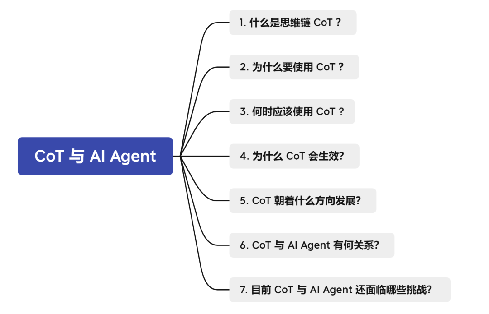
1. What Is Chain-of-Thought (CoT)?
Before introducing Chain-of-Thought, let us begin with two broader ideas.
First, what is “language intelligence”? Language intelligence can be understood as the ability to use concepts expressed in natural language to understand experiences and to reason among those concepts. Humans are, as far as we know, the only species with this advanced ability for abstraction and understanding. From another perspective, language intelligence is also one of the defining capabilities that distinguishes humans from other animals as an “intelligent species.”
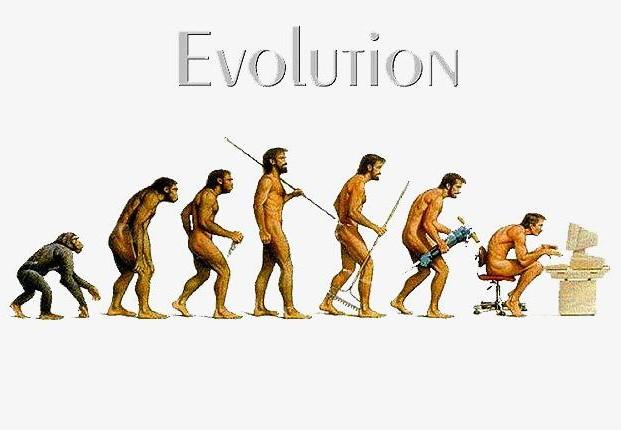
As parameter counts have rapidly increased, large-scale Transformer-based language models have gradually demonstrated—through the conversational form of “Chat”—their abilities to understand and reason about concepts. Intuitively, it is not difficult to accept that a “language model” can learn conceptual relationships. But merely discovering, in a Word2Vec-like sense, that “king” is closer to “man” than to some other word is clearly nowhere near enough to qualify as language intelligence.
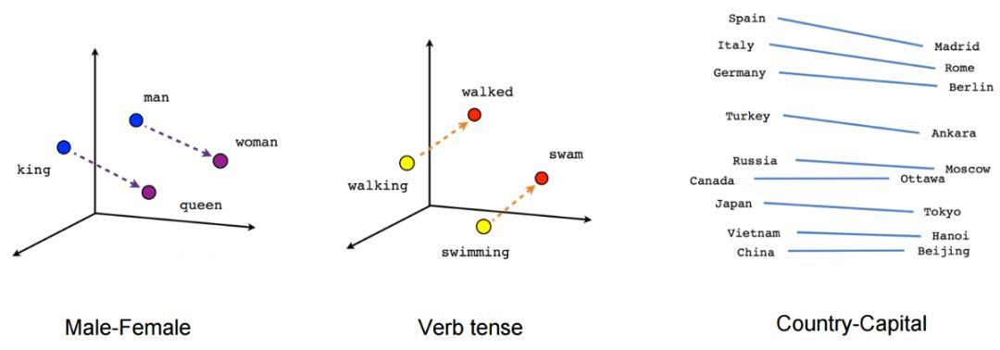
What truly sparked people’s imagination about large models approaching “language intelligence” was their ability to perform conceptual reasoning. Reasoning generally means deriving new conclusions from several known premises. Unlike simple understanding, reasoning is usually a multi-step process, and the process can generate important intermediate concepts that help solve complex problems.
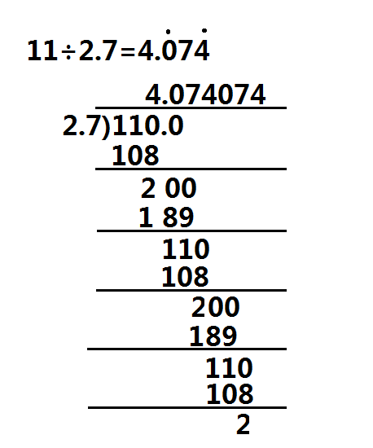
In 2022, Google researchers introduced the idea in the paper Chain-of-Thought Prompting Elicits Reasoning in Large Language Models: by encouraging a large model to break a complex problem into a sequence of smaller subproblems and solve them step by step, one can significantly improve model performance. This sequence of intermediate reasoning steps is what we call a Chain of Thought.
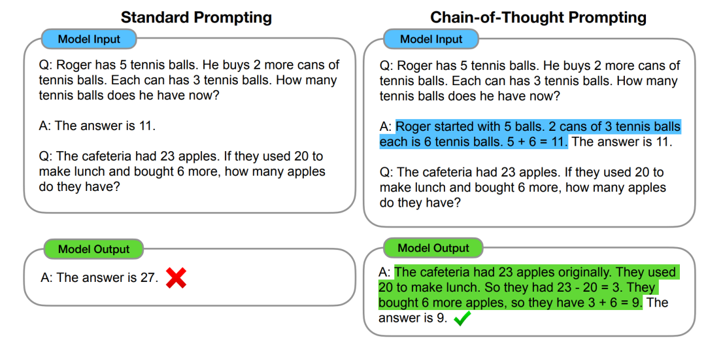
Traditional prompting often maps input directly to output:
<input → output>. CoT instead creates a mapping of
<input → reasoning chain → output>. If we break down
a CoT prompt in more detail, its workflow becomes clearer.
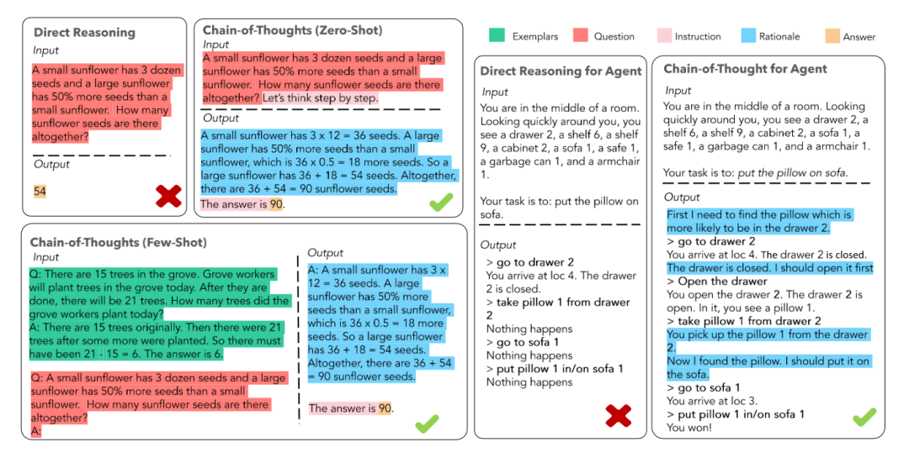
As illustrated above, a complete CoT prompt often contains three components: an instruction, a rationale, and exemplars. The instruction describes the problem and specifies the desired output format. The rationale is the intermediate CoT reasoning process, which may include a solution procedure, intermediate steps, and any external knowledge relevant to the problem. Exemplars provide input-output examples in a few-shot format; each exemplar typically includes a problem, a reasoning process, and an answer.
Depending on whether exemplars are included, CoT can be divided into Zero-Shot CoT and Few-Shot CoT. In the figure above, Zero-Shot CoT does not provide demonstrations and simply adds the classic sentence “Let’s think step by step” to the instruction, which is often enough to “awaken” the model’s reasoning ability. Few-Shot CoT, by contrast, explicitly describes solution steps in the demonstrations and asks the model to imitate those reasoning patterns.
2. Why Use CoT?
Since the introduction of CoT, countless studies have validated its effectiveness. Its benefits can broadly be summarized in four points:
- Stronger reasoning ability. By decomposing complex problems into multi-step subproblems, CoT can substantially improve a model’s reasoning performance and reduce the tendency to overlook critical details. It helps allocate computation toward the core steps needed to solve the problem.
- Better interpretability. Instead of receiving only a final answer, CoT exposes the model’s intermediate solution process. This helps us understand how the model arrived at its answer and makes it easier to identify where an error occurred.
- Greater controllability. When the model produces a sequence of explicit steps, we can exert more influence over the problem-solving process and reduce the extent to which the model behaves like an uncontrollable black box.
- Greater flexibility. A simple phrase such as “Let’s think step by step” can enable CoT across many existing models. Moreover, the ability to reason incrementally is useful far beyond “language intelligence,” including scientific applications and the construction of AI Agents.
To demonstrate the improvement produced by CoT more directly, the survey reports experiments across seven different reasoning-task datasets. As shown below, CoT delivers significant improvements over direct prompting on all of the reasoning tasks.
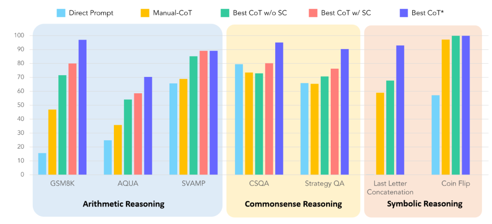
3. When Should CoT Be Used?
Exactly when CoT should be used remains an open question, but the survey provides several useful insights from both engineering and theoretical perspectives.
From an engineering perspective, suitable scenarios can roughly be summarized by three conditions: (1) you are using a large model, (2) the task requires complex reasoning, and (3) simply increasing the model size no longer produces substantial performance gains. Existing studies also suggest that CoT is more suitable for difficult reasoning tasks such as computation and programming, and less useful for simple tasks such as single-choice classification or sequence labeling. CoT also tends not to work well for relatively small models—roughly below 20B parameters—and may even increase hallucination in such models.
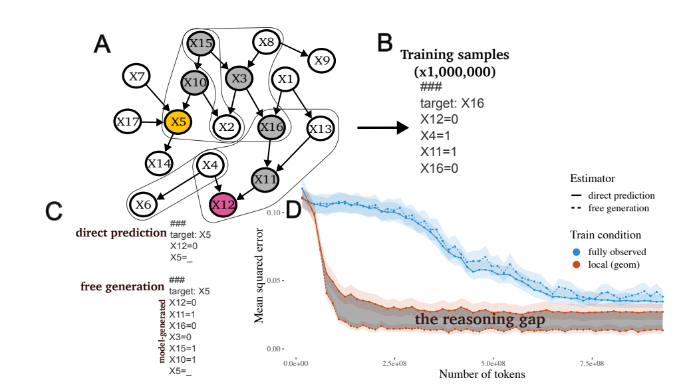
From a theoretical perspective, a Stanford paper titled Why Think Step-by-Step? Reasoning Emerges from the Locality of Experience suggests that CoT works especially well when a model’s training data exhibits local clusters of variables like those shown above. These local clusters refer to variables in the training data that interact strongly and influence one another.
Other studies have also found that diversity among the demonstrations provided to a model can improve CoT performance. The relevance of the rationale to the question, as well as the ordering of reasoning steps, can also have major effects. Another interesting observation is that training models on code data—or on data that already follows a CoT-like format—can improve CoT performance.
In short:
CoT is generally most appropriate for models larger than roughly 20B parameters, and the training data should be relevant to the task and exhibit meaningful internal relationships.
4. Why Does CoT Work?
There is still no universally accepted theory explaining why CoT works. However, many papers have conducted experiments on the interaction between CoT and large models. Much like the relationship between physical experiments and physical theory, several empirical observations may help us reason about its underlying mechanism:
- CoT can fail when the model is too small.
- CoT brings little or no improvement on simple tasks.
- Increasing the degree of interconnection within training data can improve CoT performance.
- Errors or irrelevant reasoning steps in demonstrations do not necessarily reduce CoT performance.
- And so on.
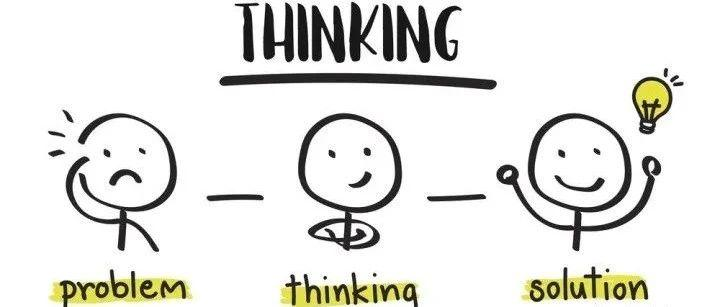
If we summarize and extend these findings, one possible interpretation is the following. First, CoT requires the model to possess some minimum amount of foundational knowledge. If the model is too small to understand the necessary “atomic” concepts, there is little basis for higher-level reasoning. Second, CoT can build bridges among pieces of foundational knowledge the model already possesses, turning isolated known facts into a connected “chain” and reducing the chance that the model drifts away from the problem. Finally, the function of CoT may be less about teaching a model how to reason than about forcing it to actually perform reasoning. The model may already acquire reasoning ability during pretraining; CoT simply imposes a structured output process that encourages the model to generate its answer incrementally.
5. Where Is CoT Heading?
In the little more than a year since CoT emerged, it has evolved far beyond the simplest “Let’s think step by step” prompt. As a survey, this paper gives a fairly comprehensive overview of CoT’s main research directions and evolutionary paths. The figure below provides a useful map of the literature.
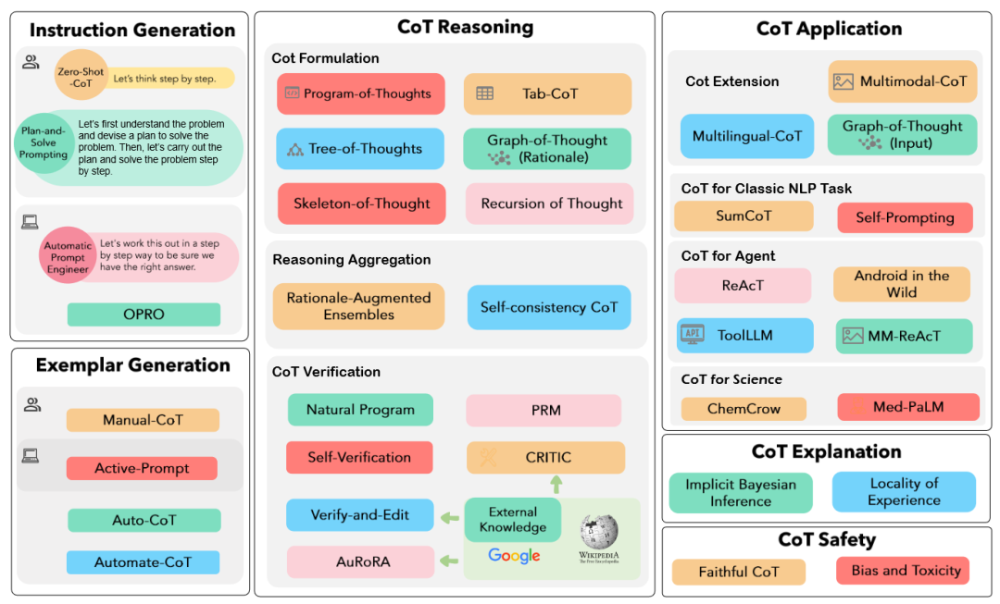
Overall, CoT research has developed along three major paths, shown from left to right in the figure: prompt patterns, reasoning structures, and application scenarios. Let us briefly review the representative work in each direction.
Prompt Patterns
The first direction is prompt patterns, shown on the left side of the figure. Research on prompt patterns asks what kind of prompt should be given to a large model to elicit stronger reasoning ability. This line of work can in turn be divided into instruction generation and exemplar generation.
Instruction generation can be manual or automatic. The simple phrase “Let’s think step by step” is a classic example of manually generated instruction. Another manual method is Plan-and-Solve, whose central idea is to first ask the model to create a plan that divides a task into smaller subtasks, and then execute that plan step by step. Its prompt is: “Let’s first understand the problem and devise a plan to solve the problem. Then, let’s carry out the plan and solve the problem step by step.”
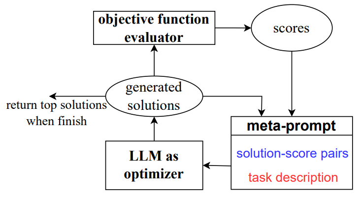
Manual instructions obviously cannot adapt to every complex real-world situation, so automatic instruction generation naturally followed. Two representative methods are Automatic Prompt Engineer (APE) and Optimization by PROmpting (OPRO). As illustrated above, the core idea of both APE and OPRO is to design a mechanism that lets the model observe the task performance of multiple candidate prompts and automatically select the best prompt by maximizing a performance score.
Exemplar generation can likewise be manual or automatic. Traditional Few-Shot CoT is a typical manually constructed exemplar method. Building on this, ActivePrompt asks a model to answer problems multiple times using manually created demonstrations, then identifies the “most uncertain” problems using uncertainty measures such as entropy or variance and adds human annotations for those cases. It therefore sits somewhere between manual and automatic exemplar generation. To automate the process more completely, Auto-CoT was proposed. It contains two stages: (1) problem clustering, where the task dataset is clustered; and (2) exemplar sampling, where one representative problem from each cluster center is selected and a reasoning chain is generated using Zero-Shot CoT.
Reasoning Structures
In addition to asking what kinds of prompts induce better CoT behavior, many researchers focus directly on the structure of CoT itself. Major directions include CoT construction, reasoning aggregation, and CoT verification.
CoT construction transforms the traditional linear, chain-like CoT into forms such as programs, tables, trees, or graphs. Representative methods include the well-known PoT, Tab-CoT, ToT, and GoT-Rationale. The figure below clearly shows their differences.
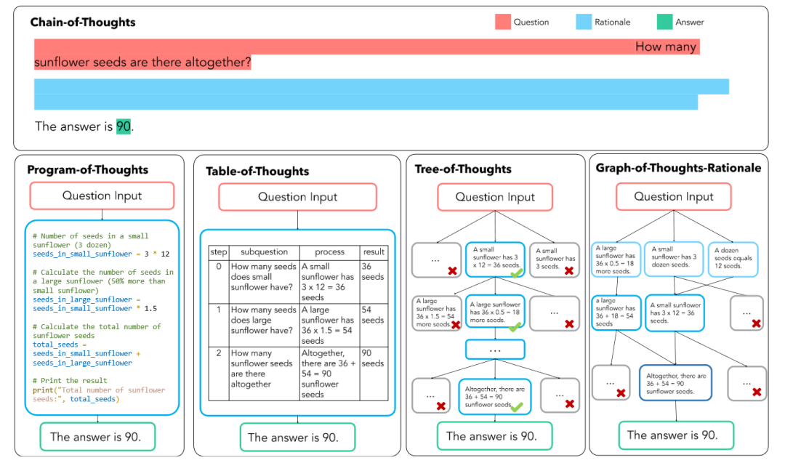
First is PoT, where P stands for Program. Its idea is straightforward: for calculations inside a reasoning chain that the model may perform incorrectly, ask the model to generate code and execute it in an interpreter, thereby decoupling complex computation from free-form text generation.
Second is Tab-CoT, where Tab stands for tabular. In Tab-CoT, the model is forced to maintain a reasoning table at every step, with columns such as “step | subproblem | process | result.” The model then extracts the final answer from the generated table, which can strengthen reasoning reliability.
Next is ToT, where T stands for Tree—Tree of Thoughts. A simple way to understand it is as an extension of the linear CoT into a tree structure. When solving a subproblem, the model generates multiple candidate answers. The resulting tree allows it to look ahead when making the next decision and to backtrack when earlier choices turn out to be poor.
Extending Tree into Graph gives us GoT. The core of a Graph-of-Thought system is a controller, which manages Graph Operations (GoO) and Graph Reasoning States (GRS). GoO decomposes a task into a graph of interconnected nodes and edges, while GRS maintains the model’s reasoning process over that graph, including the current state, decision history, and related information.
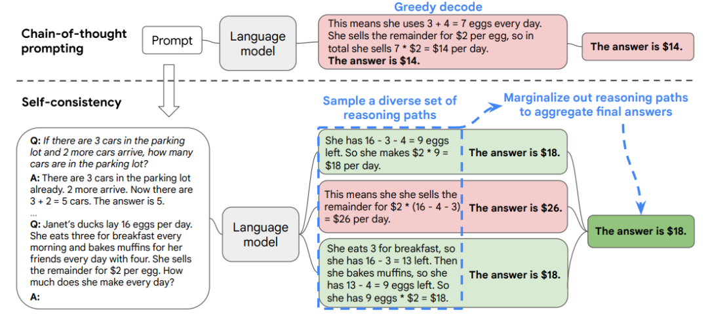
Beyond the various forms of XoT, some work has studied how reasoning paths are decoded. A representative method in reasoning aggregation is Self-Consistency CoT. Self-Consistency CoT uses a manually designed prompt to sample multiple reasoning paths, then applies majority voting to identify the answer that is most consistent across those paths. This replaces or supplements ordinary greedy decoding and can improve CoT performance.
A final line of reasoning-structure research is CoT verification. CoT verification focuses on multi-round questioning that lets the model “verify itself,” repeatedly checking its own responses through forward and backward reasoning. As this area has developed, researchers have also begun introducing external tools to verify information inside the reasoning chain—for example, search systems, calculators, and computer programs.
One classic method is Self-Verification. It has two steps: (1) sample multiple candidate reasoning paths; and (2) given a candidate conclusion, ask the model to verify whether the conditions of the problem support that conclusion, then rank the candidates according to their verification scores.
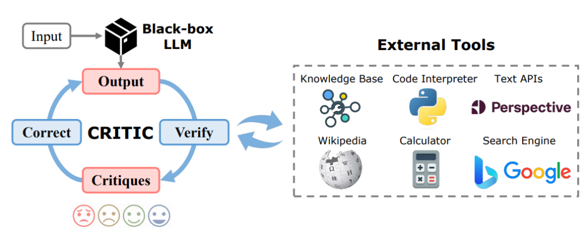
A representative framework that introduces external tools into CoT verification is CRITIC. CRITIC allows a model to interactively use external tools to verify and revise its outputs. It strengthens the reliability of CoT through a four-stage loop: model output, external-tool verification, verification feedback, and answer revision. Extending this idea further leads to task-adaptive and process-automated systems such as AuRoRA. AuRoRA extracts relevant knowledge from multiple sources, combines, checks, and refines that knowledge, and then uses it to revise the initial CoT, improving both accuracy and logical consistency.
One particularly interesting paper, Can Large Language Models Really Improve by Self-Critiquing Their Own Plans?, questions whether large models can reliably verify their own CoT at all. If the model itself lacks the ability to solve the problem exposed by the verification feedback, it may over-correct its reasoning and even move away from an originally correct answer.
Application Scenarios
In addition to modifying CoT itself, many studies deploy CoT in different application scenarios to strengthen model capabilities in those settings. One simple example is extending monolingual CoT to multilingual CoT. More broadly, applications include moving from unimodal to multimodal settings and from specialized complex-reasoning tasks to general reasoning tasks. Multimodal CoT is especially promising. It can be divided into two broad forms: multimodal input and multimodal output.
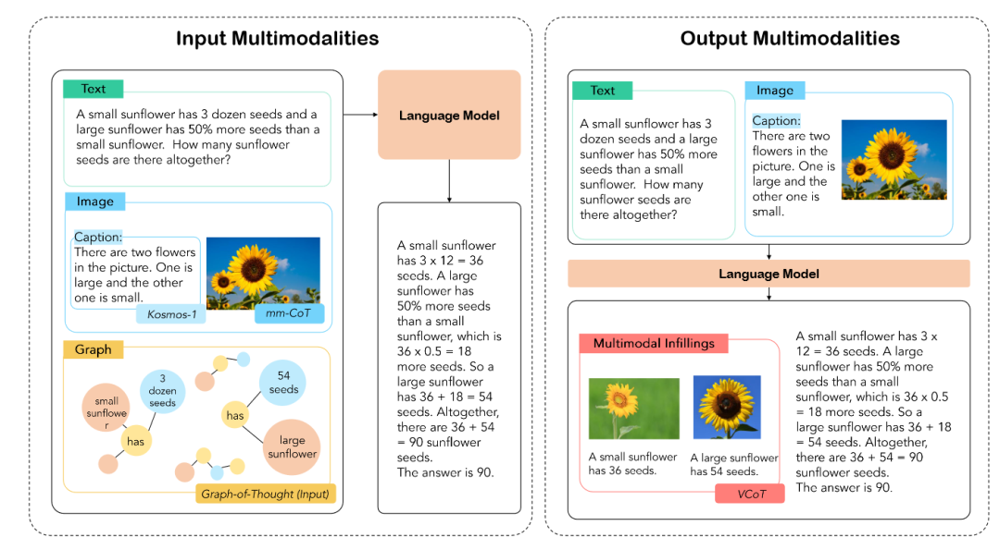
MM-CoT was among the first works on multimodal-input CoT. It embeds CoT through fine-tuning, combining language and images in a two-stage framework consisting of rationale generation and answer inference. Building on MM-CoT, GoT-Input extracts triples from a graph of thoughts generated by CoT and then uses a GNN to unify text, images, and CoT information in order to generate the final answer. In contrast, VCoT addresses multimodal output. It begins image generation by producing captions and identifying the key visual focus, then recursively fills in image information to achieve multimodal output.
Beyond multimodal reasoning, CoT has also been applied to text summarization (SumCoT), open-domain question answering (Self-Prompting LLMs), machine translation (MAPS), chemistry (ChemCrow), medicine (Med-PaLM), and many other fields.
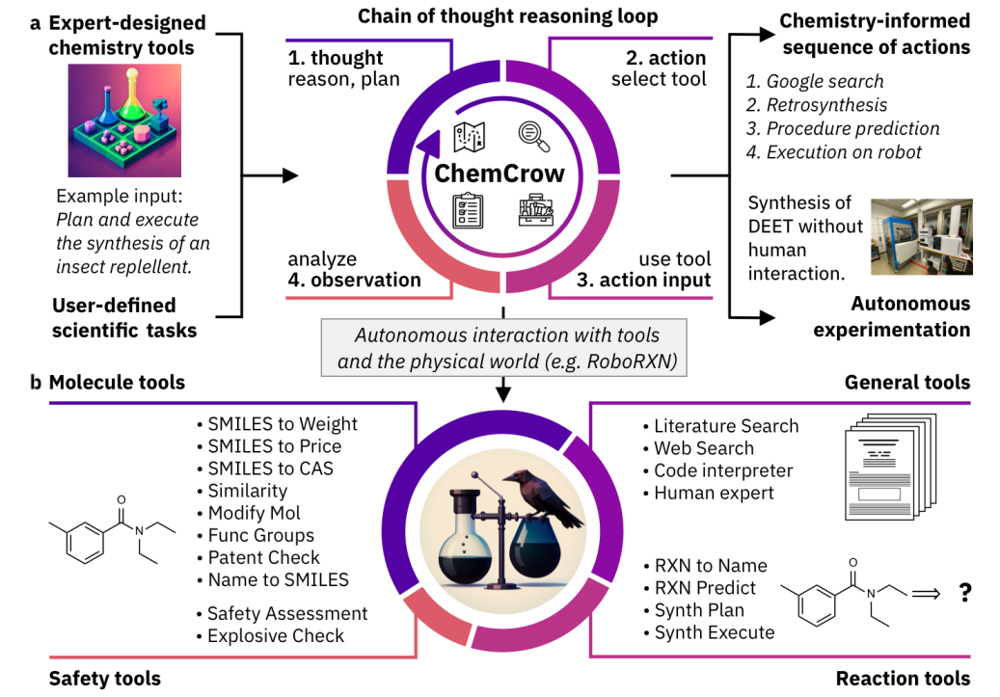
6. What Is the Relationship Between CoT and AI Agents?
Recall the definition of an Agent from our previous article. The Agent we hope to build with AI technologies is essentially an entity with autonomous intelligence—capable of independently identifying problems, setting goals, proposing solutions, choosing among them, executing actions, and checking and updating its behavior. Given the general problem-solving ability of large models and the “prior knowledge” acquired during pretraining, an LLM-based Agent can be represented by the structure below.
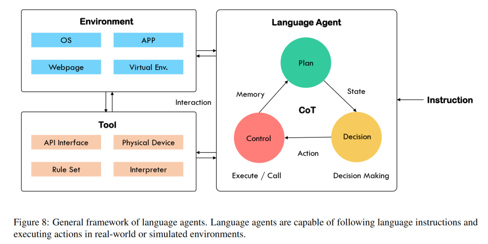
The large-model Agent shown above mainly consists of three components: the Agent core, tools, and the environment. After a human instruction enters the Agent core, the Agent performs a series of planning, decision-making, and control operations while using tools to interact with the external environment.
The large model that serves as the Agent core is clearly central to simulating human intelligent decision-making. For many tasks handled by an Agent, the Agent’s built-in knowledge does not contain a direct answer. It therefore needs to plan, decide, act, receive feedback, and continue iterating through repeated interactions with the external environment. Across this planning-decision-control loop, the model needs capabilities in perception, memory, and reasoning. As illustrated below, CoT can strengthen an Agent in all three dimensions.
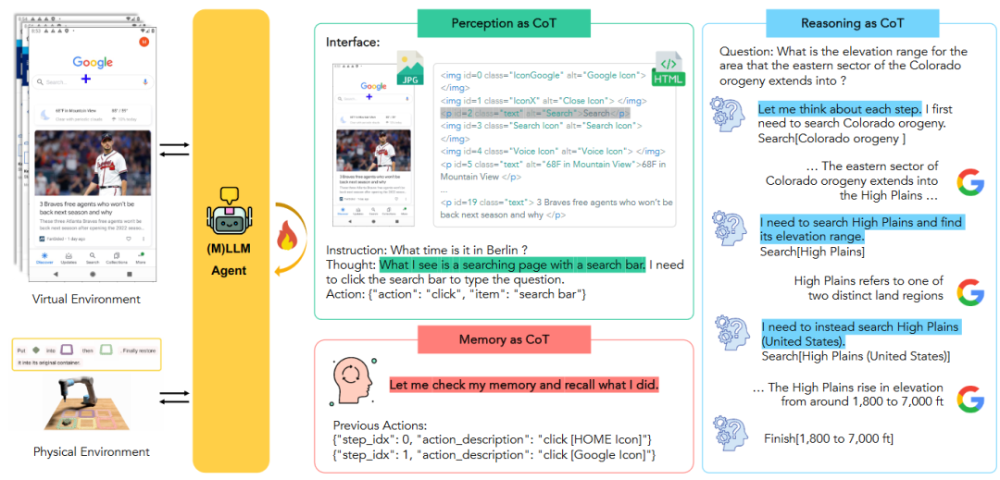
Perceptual CoT
Whether the input comes from environmental feedback or a human instruction, an Agent must first understand the information it receives, identify intent based on that understanding, and transform it into the next task. CoT can substantially help a model “perceive” current input. For example, a prompt such as “Answer: Let’s think step by step. I see ..., I need to ...” can force the model to focus on incoming information incrementally and understand it more carefully.
In robot-control settings, Agent decisions will inevitably sometimes be wrong. The ability to interpret error feedback, understand the reason for failure, and adjust subsequent actions is therefore critical for multi-step decision-making in dynamic environments. Perceptual CoT can strengthen this self-correction capability.
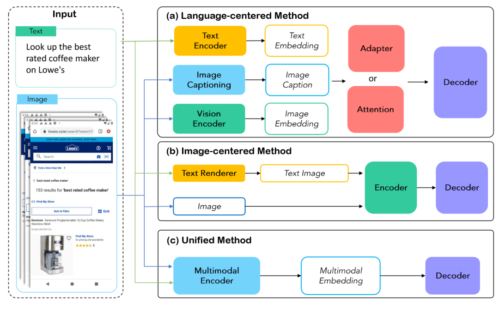
Interacting with the external world also requires Agents to process multimodal information. This can be accomplished either by using an inherently multimodal foundation model or by converting other modalities into language that a language model can understand. A particularly interesting question is whether LLM Agents must rely on language-centered perception. As shown above, some work extends language-centered systems so that language models can encode other modalities, while other work develops image-centered perception or genuinely multimodal perception that unifies text and images. However, because multimodal systems introduce major challenges in data, computation, and scalability, a truly multimodal-centered era of Agent perception has not yet fully arrived.
Memory CoT
Generally speaking, LLM Agents possess both short-term and long-term memory. Short-term memory is usually temporal information that can change flexibly during multiple rounds of interaction—hence it is also called working memory. It provides immediate contextual support and can naturally be modeled as a chain of historical actions.
Compared with the dynamic nature of short-term memory, long-term memory provides more static records of past events and a more abstract understanding of accumulated knowledge. Long-term memory can be represented through trainable parameters inside the model or through an externally maintained memory store.
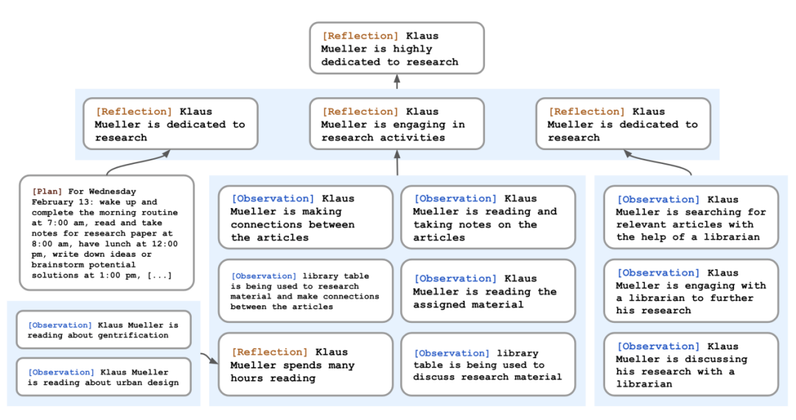
When sequence length grows and a simple linear memory chain becomes inefficient, researchers have explored tree search and vector retrieval to support efficient insertion, deletion, updating, and querying of memory.
Tree-based methods store memory in a tree structure and allow an Agent to iteratively access textual memories. For example, the famous Stanford “25-agent town” paper introduced a Reflection Tree. During repeated interactions with the environment, the Agent periodically extracts historical information and performs “reflection.” The resulting abstractions form a tree: leaf nodes represent basic observations from each interaction, while non-leaf nodes represent increasingly abstract reflections, with abstraction increasing toward the root.
Another approach is vector retrieval. Complex data are embedded into a vector database so that long-term memory can be stored and retrieved efficiently. When an Agent encounters a new problem and needs to “recall” previous experience, the vector-based memory system quickly retrieves relevant information, helping maintain consistency in the Agent’s behavior.
Reasoning CoT
Beyond perception and memory, CoT also helps Agents decompose tasks and plan and decide step by step, improving the reliability of problem solving. In an Agent, CoT’s central function is to connect planning, action, and observation, bridging the gap between reasoning and acting. Reasoning helps the model plan actions and handle exceptions, while actions allow the model to interact with the environment and collect additional information that supports further reasoning.
For example, AgentBench forces large-model Agents to complete tasks through alternating “thought” and “action” steps. Action-chain techniques use a sequence of past actions and future action plans to support decision-making, effectively transforming a decision problem into a CoT reasoning problem.
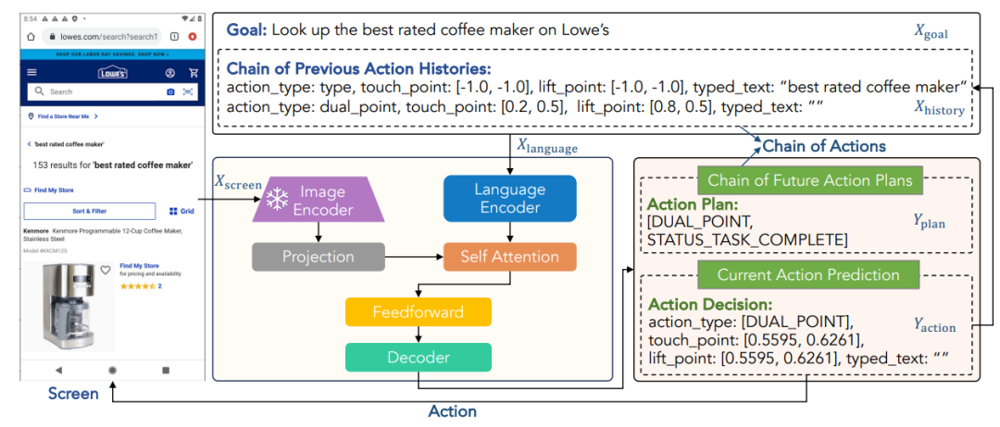
Tool use expands the capability boundary of LLM Agents. With tools, the model is no longer limited to predicting the next action—it gains the ability to actually execute actions. It can generate code to control machines, call APIs to retrieve data, use software and calculators, and so on. Browsers can also provide continuously updated external knowledge, extending the model’s knowledge boundary through retrieval and giving it an external source for self-verification.
In addition to tool use, some research focuses on fine-tuning large models on datasets designed specifically for Agent scenarios—somewhat like writing a dedicated “textbook” for Agents—in order to produce stronger task-specific Agents.
7. What Challenges Do CoT and AI Agents Still Face?
Although CoT and AI Agents are already widely used in programming, scientific research, office work, and many other areas, both remain young fields with major challenges:
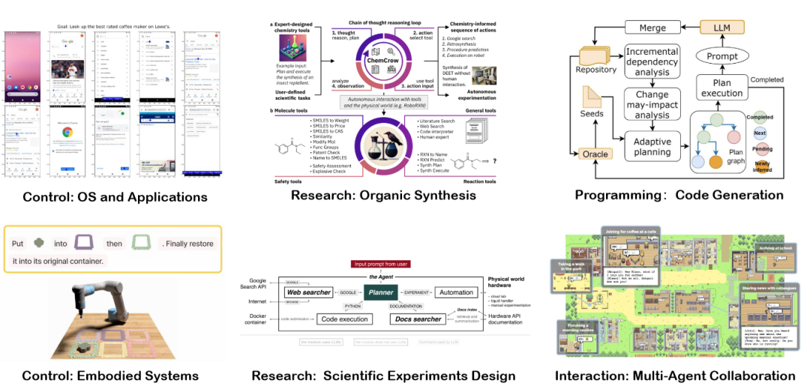
- Generalization to unknown domains. The emergence of AI Agents itself expands the ability of large models to solve more complex and unfamiliar problems. But without truly embodied interaction with the real world, it remains unclear whether an Agent that can browse the web can use the same framework and engineering approach to control a formation of drones.
- Over-interaction. To complete tasks, Agents often need many complicated multi-step interactions with their environments. Research suggests that Agents can become trapped in interaction loops, repeatedly acting without making progress. Their inefficiency also creates new problems in log storage and information retrieval.
- Personalized Agents. A personal intelligent assistant for everyone is an appealing vision, but truly personalized Agents still face major technical obstacles. Existing approaches roughly follow three paths: customized prompts, fine-tuning, and model editing. Each has its own limitations, and current work is mostly tailored to specific problem settings rather than providing a complete, unified solution.
- Multi-Agent societies. Scaling up the number of LLM Agents and using them to form a multi-agent society where emergent social behavior can be observed is another fascinating direction. The main obstacle is the enormous computational cost.
- Agent safety. As Agents move into everyday life, the safety of both Agents and CoT becomes increasingly important. Familiar issues include privacy leakage, abuse of permissions, harmful information, and related risks. Once Agents act in the physical world, an additional alignment problem appears: humans receive rich embodied feedback such as pain, while AI Agents do not naturally receive the same types of signals. Aligning two fundamentally different kinds of entities will therefore be critical.
- Agent evaluation. Objectively measuring an Agent’s capability is itself a new problem. The benchmark-based “leaderboard” evaluation style of the earlier NLP era is clearly insufficient for systems that continuously interact with external environments. An Agent that performs 99 steps correctly but produces the wrong final answer may be more capable than one that performs 99 steps incorrectly but happens to output the correct final answer. Agent evaluation therefore needs new metrics and methods beyond simple task-success rates.
In little more than a year, we have collectively witnessed the rapid development and remarkable vitality of large models, CoT, and Agent technologies. At a time when new work is appearing at an explosive pace, a survey that is both logically organized and genuinely comprehensive is especially valuable. Of course, many of the questions discussed in the paper remain unresolved because this is still a frontier research area, and they are well worth continued discussion.